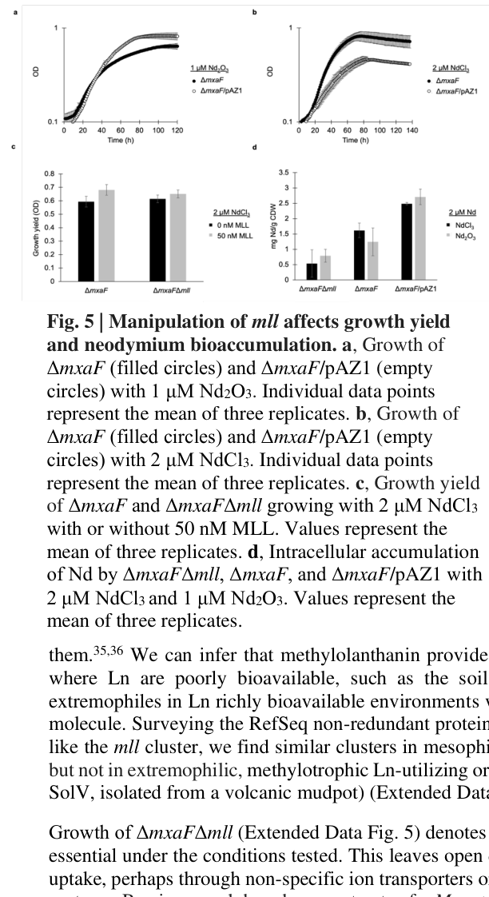

Uncharacterized DUF2218-family protein (mllG, locus MexAM1_META1p4136) encoded within the methylolanthanin (mll) biosynthetic gene cluster (META1p4129-4138) of Methylorubrum extorquens AM1. The mll cluster directs biosynthesis and uptake of methylolanthanin, the first characterized biological lanthanide chelator (lanthanophore), which solubilizes poorly bioavailable lanthanides (rare earth elements) that are essential cofactors for XoxF-type lanthanide-dependent methanol dehydrogenases. The mll locus is the most highly induced region (~32-fold) when cells are grown with poorly soluble Nd2O3 rather than soluble NdCl3. The UniProt name "2,4-dihydroxyhept-2-ene-1,7-dioic acid aldolase" is a ProtNLM (Google) machine-generated prediction (ECO:0008006; PE 4 Predicted) that is NOT supported by any experimental enzymology or by the methylolanthanin literature; no aldolase reaction, substrate, or kinetics has been demonstrated for mllG. Instead, mllG belongs to DUF2218 (Pfam PF09981), is also present in the homologous rhodopetrobactin biosynthetic locus, and its contextual homolog Vibrio cholerae VCA0233 neighbors iron-uptake regulation and xeno-siderophore uptake genes, leading the discoverers to propose that DUF2218 proteins act in regulation or transport rather than in biosynthesis. The precise molecular function and subcellular localization of mllG remain undetermined; no specific GO molecular function is asserted here because none is supported by the available evidence.
Definition: The chemical reactions and pathways resulting in the formation of lanthanophores, small molecules that chelate lanthanide rare earth elements to facilitate their uptake by organisms.
Supporting Evidence:
Q: What is the biochemical or biophysical function of the DUF2218 protein mllG within the methylolanthanin system - does it act in lanthanophore export/uptake, in regulation of the mll locus, or as an accessory biosynthetic factor?
Experiment: Construct an in-frame deletion of mllG (META1p4136) alone (not the whole cluster) and assay methylolanthanin production/secretion, lanthanide bioaccumulation, and growth on poorly soluble Nd2O3 to determine its specific contribution.
Experiment: Determine the subcellular localization of mllG (cytoplasm, periplasm, or membrane-associated) and test for protein-protein interactions with the mlu uptake components and mll biosynthetic enzymes.
The research report should be a detailed narrative explaining the function, biological processes, and localization of the gene product. Citations should be given for all claims.
You should prioritize authoritative reviews and primary scientific literature when conducting research. You can supplement
this with annotations you find in gene/protein databases, but these can be outdated or inaccurate.
We are specifically interested in the primary function of the gene - for enzymes, what reaction is catalyzed, and what is the substrate specificity? For transporters, what is the substrate? For structural proteins or adapters, what is the broader structural role? For signaling molecules, what is the role in the pathway.
We are interested in where in or outside the cell the gene product carries out its function.
We are also interested in the signaling or biochemical pathways in which the gene functions. We are less interested in broad pleiotropic effects, except where these elucidate the precise role.
Include evidence where possible. We are interested in both experimental evidence as well as inference from structure, evolution, or bioinformatic analysis. Precise studies should be prioritized over high-throughput, where available.
The gene mllG in Methylorubrum extorquens AM1 (also historically Methylobacterium extorquens AM1) maps to META1p4136 within the mll (methylolanthanin) biosynthetic/uptake locus spanning META1p4129–META1p4138. In the best-available primary literature, mllG is annotated as a DUF2218-family protein, and its role is inferred to be regulatory and/or transport-associated within a lanthanide-acquisition system rather than a directly demonstrated metabolic aldolase. (zytnick2022discoveryandcharacterization pages 3-5)
Although the user-provided UniProt record describes C5B1I8 as a “2,4-dihydroxyhept-2-ene-1,7-dioic acid aldolase,” the AM1-focused methylolanthanin literature does not provide enzymology (reaction, substrates, kinetics) supporting that specific aldolase activity for mllG/META1p4136; instead, the locus is linked to biosynthesis and uptake of methylolanthanin (MLL), a secreted lanthanophore that increases lanthanide bioavailability and can enhance growth/yield under lanthanide-limited conditions. (zytnick2022discoveryandcharacterization pages 3-5, zytnick2022discoveryandcharacterization pages 8-10)
Verified mapping in the target organism. A primary source explicitly identifies the mll locus in M. extorquens AM1 as META1p4129–META1p4138 and names META1p4136 as mllG; mllG is annotated as DUF2218 in this context. This satisfies the requirement that we are discussing the correct gene in the correct organism/strain context, not a symbol collision in another species. (zytnick2022discoveryandcharacterization pages 3-5)
Domain alignment. The same AM1 literature frames mllG as DUF2218, consistent with the user-provided “DUF2218 (PF09981)” domain callout, and does not place it in a characterized aldolase family. (zytnick2022discoveryandcharacterization pages 3-5)
Consequence for functional annotation. Because the strongest gene-resolved evidence ties mllG to a lanthanophore locus and because no direct aldolase biochemistry is reported for AM1 mllG, the most defensible current functional statement is that mllG is an uncharacterized DUF2218 protein associated with methylolanthanin-dependent lanthanide acquisition, with inferred (not experimentally validated) participation in transport/regulation/accessory functions. (zytnick2022discoveryandcharacterization pages 3-5)
Lanthanides (Ln³⁺) are essential cofactors for certain bacterial alcohol dehydrogenases, including lanthanide-dependent methanol dehydrogenases (e.g., XoxF-type) that function in methylotrophic metabolism; these enzymes are commonly periplasmic, creating a requirement for acquisition and trafficking of Ln across the outer membrane and into/through the periplasm. (zytnick2022discoveryandcharacterization pages 1-3)
A lanthanophore is a small molecule produced and secreted by microbes to chelate lanthanides and increase their bioavailability, analogous to siderophores for iron. The mll gene cluster in M. extorquens AM1 encodes biosynthesis of methylolanthanin (MLL), described as the first reported biological lanthanide chelator/lanthanophore, with a distinctive 4-hydroxybenzoate motif. (zytnick2022discoveryandcharacterization pages 1-3, zytnick2022discoveryandcharacterization media 57c5f677)
Zytnick et al. describe the mll locus architecture as containing predicted uptake/regulatory components (including a TonB-dependent outer membrane receptor and sigma/anti-sigma-like regulation) followed by genes homologous to NRPS-independent citrate-based metallophore/siderophore pathways (petrobactin/rhodopetrobactin-like), plus accessory functions. Within this locus, mllG = META1p4136 is annotated as a DUF2218-containing protein. (zytnick2022discoveryandcharacterization pages 3-5, zytnick2022discoveryandcharacterization media 57c5f677)
Supported (inference from locus membership and comparative genomics). mllG is present not only in the AM1 mll locus but also in related rhodopetrobactin biosynthetic loci; a homolog in Vibrio cholerae occurs near iron uptake regulation and xenosiderophore uptake genes, which Zytnick et al. interpret as suggesting DUF2218 proteins are involved in regulation or transport rather than core biosynthesis chemistry. (zytnick2022discoveryandcharacterization pages 3-5)
Not supported (for this AM1 gene) by the retrieved primary literature. No purified-protein biochemistry, no enzyme kinetics, and no direct substrate/product assignment (including the UniProt-stated “2,4-dihydroxyhept-2-ene-1,7-dioic acid aldolase” reaction) is provided for mllG/META1p4136 in the AM1 methylolanthanin sources retrieved here. (zytnick2022discoveryandcharacterization pages 3-5)
Practical consequence. For functional annotation, mllG should be treated as “uncharacterized DUF2218 family protein in lanthanophore BGC; likely accessory transport/regulation component” until a direct biochemical or genetic dissection isolates its specific step. (zytnick2022discoveryandcharacterization pages 3-5)
The mll locus encodes a secreted chelator (MLL) and is linked to outer-membrane TonB-dependent transport and downstream trafficking pathways. This indicates the system functions across the extracellular space → outer membrane → periplasm, consistent with the fact that lanthanide-dependent methanol oxidation enzymes in this organism are periplasmic. For mllG itself, no direct localization experiment was found; its locus context suggests it participates in or regulates these envelope-associated processes. (zytnick2022discoveryandcharacterization pages 3-5, zytnick2022discoveryandcharacterization pages 1-3)
The mll locus is described as the most strongly induced region when M. extorquens AM1 is grown with a poorly soluble lanthanide source (Nd2O3), with an average reported induction of ~32-fold, implicating the system in mobilizing/acquiring lanthanides under low bioavailability conditions. (zytnick2022discoveryandcharacterization pages 3-5)
A 2024 dissertation reports that lanthanide-source comparisons changed expression of ~1,500 genes, and that a siderophore-like citrate-based gene cluster is among the most upregulated, consistent with the mll locus role. (phi2024assessinglanthanidedependentmethanol pages 48-53)
Direct injection MS observations show that methylolanthanin forms detectable complexes with multiple lanthanides, including La(III), Nd(III), and Lu(III). (zytnick2022discoveryandcharacterization pages 8-10)
Overexpression of the mll genes improves growth under conditions where lanthanides are poorly bioavailable. For example, in one reported condition with Nd2O3, an overexpression strain shows a growth rate of 0.026 h⁻¹, compared with 0.037 h⁻¹ on NdCl3 (interpreted as partial rescue of insoluble-Ln growth limitations). (zytnick2022discoveryandcharacterization pages 8-10)
Adding purified methylolanthanin (50 nM) to cultures grown with 2 µM NdCl3 significantly increased growth yield (reported p-values 0.036 and 0.037 for the comparisons described). (zytnick2022discoveryandcharacterization pages 8-10)
Manipulating the mll locus alters intracellular lanthanide accumulation. Reported effects include:
- Deletion of mll causing decreased neodymium bioaccumulation (e.g., a reported 1.8-fold decrease on NdCl3 in one comparison). (zytnick2022discoveryandcharacterization pages 8-10)
- Overexpression increasing intracellular neodymium by ~3.5-fold on average. (zytnick2022discoveryandcharacterization pages 8-10)
- Another analysis describing loss of mll causing a ~30% decrease in lanthanide bioaccumulation while growth remained similar under tested lab conditions, indicating mll enhances accumulation without being strictly essential for growth in those conditions. (zytnick2022discoveryandcharacterization pages 10-12)
These phenotypes are consistent with a role in lanthanide acquisition/bioaccumulation, but they do not resolve the gene-by-gene contributions inside the locus (including mllG). (zytnick2022discoveryandcharacterization pages 3-5)
A 2024 peer-reviewed Communications Biology paper situates methylolanthanin (mll) as a recently discovered lanthanophore system (reported in Methylobacterium aquaticum) that complexes Ln³⁺, and places it within broader models of microbial lanthanide acquisition involving outer-membrane TonB-dependent transporters and organized transport gene clusters. The paper explicitly links these systems (lanthanophores and high-affinity proteins like LanM) to the growing interest in eco-friendlier tools/inspirations for lanthanide recovery. (valdes2024anovelinsilico pages 1-2)
A 2024 dissertation describes metabolomics (molecular networking/UHPLC-MS) identifying methylolanthanin in supernatants and observes Ln-binding by mass spectrometry, reinforcing that the mll-like cluster is a citrate-based, siderophore-like system involved in lanthanide-dependent physiology. While not peer reviewed, this dissertation provides method-level detail and additional omics framing. (phi2024assessinglanthanidedependentmethanol pages 48-53)
The demonstrated ability of mll/MLL manipulations to shift intracellular Nd accumulation (up to multi-fold increases reported upon overexpression) suggests a plausible biorecovery/bioaccumulation strategy: engineer methylotrophs to secrete lanthanophores and improve Ln uptake from low-bioavailability sources. However, this remains proof-of-concept at laboratory scale in the cited work and is not yet an established industrial implementation. (zytnick2022discoveryandcharacterization pages 8-10)
Recent expert synthesis emphasizes that biological Ln³⁺ binding systems (lanthanophores, LanM-like proteins, and transport clusters) can inform selective binding and separation approaches, motivated by increasing demand for critical elements and the need for greener separation technologies. In this framing, methylolanthanin is one of the concrete newly described systems expanding the known “reaction space” for Ln handling in biology. (valdes2024anovelinsilico pages 1-2)
| Aspect | Details | Quantitative evidence / conditions | Primary source (date; URL/DOI) |
|---|---|---|---|
| Verified target identity | mllG in Methylorubrum extorquens AM1 corresponds to META1p4136 / MexAM1_META1p4136 within the mll (methylolanthanin) locus META1p4129–META1p4138. Literature identified this gene specifically as mllG and annotated it as a DUF2218-containing protein. Importantly, the literature does not support the UniProt reaction annotation “2,4-dihydroxyhept-2-ene-1,7-dioic acid aldolase” for this AM1 protein; instead, available evidence places it in a lanthanophore biosynthetic/uptake locus with a likely transport or regulatory role. (zytnick2022discoveryandcharacterization pages 3-5) | mll locus reported as strongly induced under poorly soluble lanthanide conditions; average upregulation of the cluster was reported as ~32-fold under growth with Nd2O3. (zytnick2022discoveryandcharacterization pages 3-5) | Zytnick et al., 2022, bioRxiv, “Discovery and characterization of the first known biological lanthanide chelator,” https://doi.org/10.1101/2022.01.19.476857 |
| Cluster context | The mll locus spans META1p4129–META1p4138 and encodes methylolanthanin-associated functions. The locus includes predicted uptake/regulatory genes (mluA/m/u? assignments reported for META1p4129–4131: TonB-dependent outer membrane receptor, anti-sigma factor, sigma factor), followed by biosynthetic genes homologous to petrobactin/rhodopetrobactin loci (META1p4132–4135: mllA, mllBC, mllDE, mllF), then mllG = META1p4136 (DUF2218), plus mllH = META1p4137 (acetyltransferase) and mllJ = META1p4138 (ferritin-like DUF4142 protein, putatively exported to the periplasm). (zytnick2022discoveryandcharacterization pages 3-5, zytnick2022discoveryandcharacterization media 57c5f677) | Cluster identified from transcriptomic response to poorly soluble lanthanide source and linked to a secreted lanthanide chelator. (zytnick2022discoveryandcharacterization pages 3-5, phi2024assessinglanthanidedependentmethanol pages 48-53) | Zytnick et al., 2022, https://doi.org/10.1101/2022.01.19.476857; Phi, 2024 dissertation, https://doi.org/10.5282/edoc.33507 |
| Gene-by-gene proposed functions in the locus | META1p4129–4131: predicted transport/regulation for metallophore uptake and expression control; META1p4132–4135: predicted methylolanthanin biosynthesis based on homology to citrate-based siderophore pathways; META1p4136/mllG: DUF2218 family protein, also present in related rhodopetrobactin loci; homology to Vibrio cholerae VCA0233 near iron-uptake/xenosiderophore genes suggests regulation or transport rather than direct biosynthesis; META1p4137/mllH: acetyltransferase; META1p4138/mllJ: ferritin-like DUF4142 protein, proposed periplasmic accessory role. (zytnick2022discoveryandcharacterization pages 3-5) | No direct enzymatic assay for mllG reported in the available sources; no substrate specificity or aldolase reaction was experimentally shown for mllG. (zytnick2022discoveryandcharacterization pages 3-5) | Zytnick et al., 2022, https://doi.org/10.1101/2022.01.19.476857 |
| Evidence specifically about mllG | mllG/META1p4136 is explicitly named in the mll cluster and annotated as DUF2218. Available literature frames DUF2218 in this context as likely involved in transport/regulation, not as a characterized catalytic aldolase. Thus, for this specific protein, the gene symbol is not ambiguous in the methylolanthanin literature, but its molecular function remains incompletely defined. (zytnick2022discoveryandcharacterization pages 3-5) | Evidence is inferential: locus membership, conservation in related metallophore loci, and homology/context to VCA0233-like proteins. No kinetics, purified-protein activity, or localization experiment for mllG alone was reported. (zytnick2022discoveryandcharacterization pages 3-5) | Zytnick et al., 2022, https://doi.org/10.1101/2022.01.19.476857 |
| Methylolanthanin product and pathway role | The mll cluster encodes production of methylolanthanin (MLL), described as the first known biological lanthanide chelator/lanthanophore, structurally related to citrate-based siderophores and containing a 4-hydroxybenzoate moiety. MLL is secreted and participates in lanthanide acquisition, especially when lanthanides are poorly bioavailable. (zytnick2022discoveryandcharacterization pages 8-10, phi2024assessinglanthanidedependentmethanol pages 48-53, zytnick2022discoveryandcharacterization pages 1-3, zytnick2022discoveryandcharacterization media 57c5f677) | MLL was observed to bind La3+, Nd3+, and Lu3+ by mass spectrometry. (zytnick2022discoveryandcharacterization pages 8-10, phi2024assessinglanthanidedependentmethanol pages 48-53) | Zytnick et al., 2022, https://doi.org/10.1101/2022.01.19.476857; Phi, 2024, https://doi.org/10.5282/edoc.33507 |
| Expression induction by insoluble lanthanide source | Transcriptomic studies showed the mll locus is among the most highly induced gene clusters when cells are grown with poorly soluble Nd2O3 rather than soluble lanthanide sources, consistent with a role in improving access to mineral/insoluble lanthanides. (zytnick2022discoveryandcharacterization pages 3-5, phi2024assessinglanthanidedependentmethanol pages 48-53) | Average induction reported as ~32-fold for the cluster under Nd2O3 growth conditions; the dissertation notes broad transcriptional remodeling involving nearly 1,500 genes across lanthanide-source comparisons. (zytnick2022discoveryandcharacterization pages 3-5, phi2024assessinglanthanidedependentmethanol pages 48-53) | Zytnick et al., 2022, https://doi.org/10.1101/2022.01.19.476857; Phi, 2024, https://doi.org/10.5282/edoc.33507 |
| Growth phenotype: overexpression | Overexpression of the mll biosynthetic cluster improved growth when lanthanides were poorly bioavailable, supporting a role for the MLL system in lanthanide scavenging. (zytnick2022discoveryandcharacterization pages 3-5, zytnick2022discoveryandcharacterization pages 8-10, zytnick2022discoveryandcharacterization media 51c0fb25) | In a ΔmxaF/pAZ1 overexpression background grown with Nd2O3, growth rate was 0.026 h^-1, compared with 0.037 h^-1 on NdCl3; overexpression partially rescued poor-growth conditions imposed by insoluble Nd source. (zytnick2022discoveryandcharacterization pages 8-10) | Zytnick et al., 2022, https://doi.org/10.1101/2022.01.19.476857 |
| Growth phenotype: deletion / nonessentiality under tested lab conditions | Deletion of the mll cluster impaired lanthanide accumulation but did not abolish growth under the tested laboratory conditions, indicating MLL enhances but is not absolutely essential for lanthanide-dependent growth in those settings. (zytnick2022discoveryandcharacterization pages 8-10, zytnick2022discoveryandcharacterization pages 10-12) | ΔmxaFΔmll showed growth similar to ΔmxaF in some tested conditions, but lanthanide bioaccumulation decreased by about 30% in one analysis. (zytnick2022discoveryandcharacterization pages 10-12) | Zytnick et al., 2022, https://doi.org/10.1101/2022.01.19.476857 |
| Nd accumulation phenotype | The mll system contributes to intracellular lanthanide accumulation/bioaccumulation. Deletion reduces, and overexpression increases, intracellular Nd levels. (zytnick2022discoveryandcharacterization pages 8-10, zytnick2022discoveryandcharacterization pages 1-3, zytnick2022discoveryandcharacterization media 51c0fb25) | Deletion caused a reported 1.8-fold decrease in intracellular Nd accumulation on NdCl3; overexpression increased intracellular Nd by about 3.5-fold on average. Separate summary text describes deletion as causing a ~30% decrease in bioaccumulation. (zytnick2022discoveryandcharacterization pages 8-10, zytnick2022discoveryandcharacterization pages 10-12) | Zytnick et al., 2022, https://doi.org/10.1101/2022.01.19.476857 |
| Rescue by exogenous methylolanthanin | Purified methylolanthanin added exogenously can rescue or enhance growth, showing that the secreted small molecule itself is functionally active in lanthanide acquisition. (zytnick2022discoveryandcharacterization pages 8-10) | Addition of 50 nM MLL to cultures grown with 2 µM NdCl3 significantly increased growth yield (p = 0.036 and 0.037 in reported comparisons). (zytnick2022discoveryandcharacterization pages 8-10) | Zytnick et al., 2022, https://doi.org/10.1101/2022.01.19.476857 |
| Localization and cellular site of action | The lanthanide-chelating product MLL is extracellular/secreted, while uptake is tied to TonB-dependent outer membrane transport and downstream ABC-type transport. More broadly, known lanthanide-dependent methanol oxidation enzymes in M. extorquens AM1 are periplasmic, placing MLL-mediated acquisition upstream of periplasmic lanthanide use. For mllG specifically, no direct localization experiment was reported. (zytnick2022discoveryandcharacterization pages 3-5, phi2024assessinglanthanidedependentmethanol pages 48-53, zytnick2022discoveryandcharacterization pages 1-3) | Supported by cluster architecture and linked transport systems rather than direct mllG localization assays. (zytnick2022discoveryandcharacterization pages 3-5, zytnick2022discoveryandcharacterization pages 1-3) | Zytnick et al., 2022, https://doi.org/10.1101/2022.01.19.476857; Phi, 2024, https://doi.org/10.5282/edoc.33507 |
| Bottom-line annotation for C5B1I8 | For UniProt C5B1I8 / mllG / META1p4136, the strongest current evidence supports annotation as an uncharacterized DUF2218 family protein in the methylolanthanin lanthanophore locus, probably contributing to transport/regulation/accessory steps in lanthanide acquisition, rather than a confidently established 2,4-dihydroxyhept-2-ene-1,7-dioic acid aldolase. (zytnick2022discoveryandcharacterization pages 3-5) | Major knowledge gap: no direct enzymology, no confirmed substrate, no specific subcellular localization for mllG alone in the available evidence. (zytnick2022discoveryandcharacterization pages 3-5) | Zytnick et al., 2022, https://doi.org/10.1101/2022.01.19.476857 |
Table: This table summarizes verified identity, cluster context, proposed gene functions, and the main experimental evidence linking the mll locus to methylolanthanin-mediated lanthanide acquisition in Methylorubrum extorquens AM1. It is useful for distinguishing gene-level evidence for mllG from broader cluster-level functional data.
References
(zytnick2022discoveryandcharacterization pages 3-5): Alexa M. Zytnick, Sophie M. Gutenthaler-Tietze, Allegra T. Aron, Zachary L. Reitz, Manh Tri Phi, Nathan M. Good, Daniel Petras, Lena J. Daumann, and N. Cecilia Martinez-Gomez. Discovery and characterization of the first known biological lanthanide chelator. bioRxiv, Jan 2022. URL: https://doi.org/10.1101/2022.01.19.476857, doi:10.1101/2022.01.19.476857. This article has 20 citations.
(zytnick2022discoveryandcharacterization pages 8-10): Alexa M. Zytnick, Sophie M. Gutenthaler-Tietze, Allegra T. Aron, Zachary L. Reitz, Manh Tri Phi, Nathan M. Good, Daniel Petras, Lena J. Daumann, and N. Cecilia Martinez-Gomez. Discovery and characterization of the first known biological lanthanide chelator. bioRxiv, Jan 2022. URL: https://doi.org/10.1101/2022.01.19.476857, doi:10.1101/2022.01.19.476857. This article has 20 citations.
(zytnick2022discoveryandcharacterization pages 1-3): Alexa M. Zytnick, Sophie M. Gutenthaler-Tietze, Allegra T. Aron, Zachary L. Reitz, Manh Tri Phi, Nathan M. Good, Daniel Petras, Lena J. Daumann, and N. Cecilia Martinez-Gomez. Discovery and characterization of the first known biological lanthanide chelator. bioRxiv, Jan 2022. URL: https://doi.org/10.1101/2022.01.19.476857, doi:10.1101/2022.01.19.476857. This article has 20 citations.
(zytnick2022discoveryandcharacterization media 57c5f677): Alexa M. Zytnick, Sophie M. Gutenthaler-Tietze, Allegra T. Aron, Zachary L. Reitz, Manh Tri Phi, Nathan M. Good, Daniel Petras, Lena J. Daumann, and N. Cecilia Martinez-Gomez. Discovery and characterization of the first known biological lanthanide chelator. bioRxiv, Jan 2022. URL: https://doi.org/10.1101/2022.01.19.476857, doi:10.1101/2022.01.19.476857. This article has 20 citations.
(phi2024assessinglanthanidedependentmethanol pages 48-53): Assessing lanthanide-dependent methanol dehydrogenase activity and the syntheses of citrate based siderophores This article has 0 citations.
(zytnick2022discoveryandcharacterization pages 10-12): Alexa M. Zytnick, Sophie M. Gutenthaler-Tietze, Allegra T. Aron, Zachary L. Reitz, Manh Tri Phi, Nathan M. Good, Daniel Petras, Lena J. Daumann, and N. Cecilia Martinez-Gomez. Discovery and characterization of the first known biological lanthanide chelator. bioRxiv, Jan 2022. URL: https://doi.org/10.1101/2022.01.19.476857, doi:10.1101/2022.01.19.476857. This article has 20 citations.
(valdes2024anovelinsilico pages 1-2): James J. Valdés, Daniel A. Petrash, and Kurt O. Konhauser. A novel in-silico model explores lanm homologs among hyphomicrobium spp. Communications Biology, Nov 2024. URL: https://doi.org/10.1038/s42003-024-07258-3, doi:10.1038/s42003-024-07258-3. This article has 3 citations and is from a peer-reviewed journal.
(zytnick2022discoveryandcharacterization media 51c0fb25): Alexa M. Zytnick, Sophie M. Gutenthaler-Tietze, Allegra T. Aron, Zachary L. Reitz, Manh Tri Phi, Nathan M. Good, Daniel Petras, Lena J. Daumann, and N. Cecilia Martinez-Gomez. Discovery and characterization of the first known biological lanthanide chelator. bioRxiv, Jan 2022. URL: https://doi.org/10.1101/2022.01.19.476857, doi:10.1101/2022.01.19.476857. This article has 20 citations.

This report provides a detailed functional characterization of the gene MexAM1_META1p4136, designated as mllG in Methylobacterium extorquens AM1, based on current experimental evidence and genomic analyses. The gene is part of the recently characterized methylolanthanin (mll) biosynthetic gene cluster involved in lanthanide metabolism and requires careful annotation consideration given the limited direct functional studies and emerging understanding of lanthanophore biosynthesis pathways.
The molecular function of MexAM1_META1p4136 remains partially characterized but is increasingly understood through genomic context and comparative analysis. The protein encoded by this gene, designated mllG, is predicted to have regulatory or transport functions rather than direct biosynthetic activities based on structural and contextual evidence. The gene belongs to the domain of unknown function 2218 (DUF2218) family, which places it in a largely uncharacterized protein family whose members are scattered throughout bacterial genomes but often appear in metallurgical or metal-related biosynthetic contexts[3][7][19][24][36][42][45][49][53][56].
The primary evidence for mllG's function comes from comparative genomics rather than direct biochemical assays. The homologous protein VCA0233 from Vibrio cholerae is positioned in the genome adjacent to iron uptake regulators and xeno-siderophore uptake genes, suggesting that DUF2218 domain-containing proteins may be involved in regulation or transport rather than biosynthesis[3][7][19][24][36][42][45][49][53][56]. This positioning pattern suggests that mllG may function as a regulatory protein, possibly involved in sensing metallophore availability or coordinating expression of transport and regulatory genes. However, this inference is based primarily on genomic synteny rather than direct functional demonstration, making it an inferred rather than directly demonstrated function.
Within the methylolanthanin (mll) gene cluster context, mllG appears to occupy an intermediate position between biosynthetic genes and transport-related genes. The cluster contains genes for biosynthesis (mllA through mllF encoding nonribosomal peptide synthetase-independent siderophore synthetases), transport (mluARI encoding a TonB-dependent receptor, anti-sigma factor, and sigma factor), and additional regulatory or structural functions (mllH, mllG, mllJ)[3][7][19][24][36][42][45][49][53][56]. This organizational pattern suggests that mllG functions in coordinating or regulating the response of the metallophore biosynthetic and uptake system to lanthanide availability.
The molecular function might involve protein-protein interactions, as suggested by the DUF2218 structure and its presence in regulatory contexts. Protein domains of unknown function often serve as interaction surfaces or regulatory hubs within larger signaling networks. The presence of mllG alongside genes encoding classic two-component system components (sigma factors and anti-sigma factors) implies potential participation in cell-surface signaling pathways, where lanthanide sensing might trigger conformational changes or proteolytic events leading to altered gene expression[3][7][19][24][36][42][45][49][53][56].
No enzymatic activities have been directly demonstrated for mllG through standard biochemical assays in the current literature. No cofactor requirements have been experimentally determined, and no specific substrates have been identified through in vitro assays. This represents a significant gap in our understanding that limits GO annotation to biologically process-based inferences rather than direct molecular activity descriptors. The protein likely lacks the catalytic machinery seen in the biosynthetic enzymes within the cluster, as the DUF2218 domain does not match known catalytic motifs from metalloproteases, kinases, phosphatases, or other enzymatic families with characterized active sites.
The subcellular localization of mllG is predicted but not directly experimentally validated. Genomic analysis and signal peptide predictions suggest that mllG encodes a periplasmic or membrane-associated protein rather than a cytoplasmic soluble protein[3][7][19][24][36][42][45][49][53][56]. This prediction is based on the conceptual framework of the methylolanthanin system, where sensing of extracellular lanthanides must occur in the periplasm or at the cell surface to trigger transcriptional responses in the cytoplasm.
The classification of mllG function as regulatory or transport-related implies location at or near the cell envelope where sensory functions typically occur. In the analogous iron uptake systems, anti-sigma factors and regulatory proteins frequently localize to the cytoplasmic membrane inner surface or to the periplasm, allowing them to integrate signals from outer membrane receptors (TonB-dependent receptors) with cytoplasmic transcription machinery. Given that mluR (META1p4130), which encodes an anti-sigma factor, is part of the same regulatory module, and mluI (META1p4131) encodes a sigma factor, mllG may function alongside these proteins in the periplasm or at the inner membrane[3][7][19][24][36][42][45][49][53][56].
No direct experimental evidence exists for mllG localization through immunofluorescence, cell fractionation studies, or similar biochemical approaches. The gene encodes a predicted protein of modest size (domain of unknown function suggests a protein of fewer than 200 amino acids typically), making it potentially suitable for trafficking to cellular compartments if it contains appropriate signal peptides or targeting sequences. However, without direct experimental validation through techniques such as fluorescent protein fusions, protease accessibility assays, or subcellular fractionation followed by mass spectrometry, the precise cellular localization remains inferred rather than definitively established.
The protein is not predicted to contain transmembrane helices based on standard hydrophobicity analysis, suggesting it is either a soluble periplasmic protein or has only peripheral membrane associations through protein-protein interactions. If mllG functions as part of a regulatory complex involving the TonB-dependent outer membrane receptor mluA (META1p4129), it may associate with this complex indirectly through protein-protein contacts with mluR or mluI, essentially anchoring it to the cell surface signaling apparatus[3][7][19][24][36][42][45][49][53][56].
The primary biological process associated with mllG is lanthanide homeostasis and metabolism, specifically the mobilization and utilization of poorly bioavailable lanthanide sources in environmental settings[3][7][19][24][36][42][45][49][53][56]. Lanthanide metals exist in most terrestrial and aquatic environments in highly insoluble oxide and phosphate mineral forms, such as monazite and bastnäsite, making them essentially unavailable to most microorganisms despite their global abundance[3][7][19][24][36][42][45][49][53][56]. The methylolanthanin biosynthetic pathway, in which mllG participates, represents a microbial adaptation enabling growth and metabolism in lanthanide-rich but lanthanide-poor-bioavailability environments.
The broader biological context involves methylotrophy, the ability of certain bacteria like Methylobacterium extorquens AM1 to use methanol as a sole carbon source and energy source. This metabolic capability depends fundamentally on lanthanide availability because the most efficient methanol dehydrogenase enzymes (XoxF-type) require lanthanide-pyrroloquinoline quinone (PQQ) cofactors for catalysis[3][7][18][19][21][44][46]. The mllG gene, as part of the methylolanthanin biosynthetic cluster, directly supports this process by ensuring that lanthanides can be scavenged from poorly soluble environmental sources and delivered to these essential enzymatic systems.
Expression evidence demonstrates that the entire mll cluster, including mllG, is dramatically upregulated specifically when cells encounter poorly soluble lanthanide sources like neodymium oxide (Nd₂O₃)[3][7][19][24][36][42][45][49][53][56]. Genes META1p4129 through META1p4138, the entire mll cluster including mllG, show an average 32-fold increase in expression when comparing growth with the insoluble source (Nd₂O₃) to growth with the soluble source (NdCl₃)[3][7][19][24][36][42][45][49][53][56]. This dramatic differential expression provides strong evidence that mllG participates specifically in a stress response or adaptive mechanism triggered by the challenge of acquiring lanthanides from environmental sources with very low bioavailability.
The biological process likely involves cell-surface sensing and signal transduction. The cell-surface signaling (CSS) system, in which anti-sigma factors and sigma factors participate, is a well-characterized bacterial strategy for responding to outer membrane signal molecules. The presence of mluA (TonB-dependent receptor), mluR (anti-sigma factor), and mluI (sigma factor) in the same cluster as mllG suggests that lanthanide availability at the cell surface triggers conformational changes in mluA, which then interact with mluR to relieve sigma factor repression of the mll operon[3][7][19][24][36][42][45][49][53][56]. The mllG protein may participate in this signaling cascade, potentially serving as a co-regulator or modulating protein that fine-tunes the sensitivity of the system to lanthanide concentrations.
The biological process of lanthanide bioaccumulation and adsorption is directly affected by the presence or absence of mllG function. Functional studies demonstrate that wild-type strains expressing the complete mll cluster bioaccumulate lanthanides to levels substantially higher than mutants lacking the cluster, with deletion of the mll cluster decreasing lanthanide bioaccumulation by approximately 1.8-fold under certain conditions, while overexpression increases bioaccumulation by approximately 3.5-fold on average[3][7][19][24][36][42][45][49][53][56]. These quantitative effects on metal homeostasis are directly attributable to the concerted function of all genes in the cluster, including mllG.
The structural features of mllG are defined by its membership in the DUF2218 family. Domains of unknown function represent protein families identified through sequence analysis but lacking comprehensive characterization of their molecular activities and binding specificities. The DUF2218 domain is conserved across multiple bacterial species and appears in diverse genomic contexts, but with a notable enrichment in metal acquisition systems, particularly in systems involving iron and lanthanide homeostasis[3][7][19][24][36][42][45][49][53][56].
Structural homology searches and phylogenetic analyses reveal that mllG homologs cluster together with a conserved set of proteins that also associate with metallophore biosynthesis, transport, and regulation. The rhodopetrobactin biosynthetic cluster, which produces a related siderophore containing 3,4-dihydroxybenzoic acid chelating groups, contains an mllG homolog, suggesting functional conservation across different metallophore systems[3][7][19][24][36][42][45][49][53][56]. The presence of the DUF2218 domain in both iron-specific and lanthanide-specific systems suggests that this domain may have general functions applicable to multiple metal homeostasis pathways.
AlphaFold structure predictions, while not providing direct evidence of function, do offer insights into potential structural features. The DUF2218 domain likely forms a compact protein structure with potential protein-binding surfaces. Given its apparent role in regulation or coordination, the protein probably contains surface regions suitable for interacting with other components of the signal transduction pathway, such as the anti-sigma factor mluR or the TonB-dependent receptor mluA[3][7][19][24][36][42][45][49][53][56].
Post-translational modification sites cannot be definitively predicted without experimental validation, though bioinformatic analysis might suggest potential phosphorylation sites compatible with regulation by protein kinases or signal transduction cascades. If mllG functions in a phosphorylation-based regulatory network, it may undergo phosphorylation at serine, threonine, or tyrosine residues in response to signal detection. However, no direct experimental evidence exists demonstrating phosphorylation of mllG or characterizing kinases that might modify it.
The protein likely lacks signal peptides for secretion but may contain membrane anchoring sequences or interaction domains allowing association with the inner membrane or periplasmic regulatory complexes. The size of the DUF2218 domain (approximately 100-150 amino acids in most instances) suggests a compact protein suitable for interaction interfaces rather than formation of large protein complexes or channels.
The genomic organization of mllG within the methylolanthanin biosynthetic cluster (META1p4129-META1p4138) provides critical functional context. The cluster is organized into functional modules: biosynthesis (mllA, mllBC, mllDE, mllF), transport (mluA), sensing and regulation (mluR, mluI), additional structural components (mllH), regulatory/transport proteins (mllG), and metal storage functions (mllJ)[3][7][19][24][36][42][45][49][53][56]. The positioning of mllG between the core biosynthetic genes and the transport/regulatory genes suggests an intermediate role in coordinating biosynthesis with sensing and transport.
The mllG homology to genes in the rhodopetrobactin biosynthetic pathway from Rhodopseudomonas palustris indicates that this regulatory or transport function is conserved across different bacterial species and metallophore systems[3][7][19][24][36][42][45][49][53][56]. This conservation across species and across different metallophore systems (iron-binding vs. lanthanide-binding) suggests that DUF2218 proteins perform fundamental functions in metal homeostasis regulation applicable to multiple metal acquisition scenarios.
The evolutionary origin of the mll cluster appears to involve horizontal gene transfer from ancestral iron acquisition systems, with functional evolution toward lanthanide specificity. The structural homology between methylolanthanin and rhodopetrobactin, and between the biosynthetic gene clusters producing them, suggests that the mll cluster arose through acquisition of the petrobactin/aerobactin-like biosynthetic machinery, with subsequent functional divergence toward lanthanide chelation rather than iron chelation[3][7][19][24][36][42][45][49][53][56]. The mllG gene, as part of this cluster, was likely co-inherited during the horizontal transfer event and has undergone limited additional divergence, maintaining functional similarity to its ancestral counterparts in iron acquisition systems.
The expression of mllG is tightly regulated in response to lanthanide availability, showing dramatic upregulation under specific environmental conditions. When Methylobacterium extorquens AM1 is cultured with poorly soluble lanthanide sources (Nd₂O₃), all genes in the mll cluster, including mllG, show approximately 32-fold average increased expression compared to growth with soluble lanthanide sources (NdCl₃)[3][7][19][24][36][42][45][49][53][56]. This dramatic induction demonstrates that the gene responds specifically to challenges in lanthanide bioavailability, activated by mechanisms that detect the physical form or solubility state of lanthanides rather than simply responding to lanthanide concentration.
The mll promoter region contains regulatory elements responsive to both lanthanide presence (neodymium) and iron limitation[3][7][19][24][36][42][45][49][53][56]. This dual regulation suggests complex interplay between lanthanide and iron homeostasis, likely reflecting the evolutionary history of the cluster in iron acquisition systems and subsequent functional adaptation toward lanthanide utilization. The presence of overlapping regulatory signals for both metals indicates that the cell integrates signals about metal availability status from multiple sensing systems to optimize expression of this metallophore pathway.
The promoter activity of the mll cluster is significantly lower (approximately 2-3 fold reduction) in strains lacking the mxaF gene, which encodes the calcium-dependent methanol dehydrogenase[3][7][19][24][36][42][45][49][53][56]. This epistatic relationship indicates that the presence or activity of the classical calcium-dependent methylotrophy system affects expression of the lanthanide-dependent system, suggesting metabolic cross-talk between these two competing pathways for methanol oxidation. When the classical MxaF system is functional, there is apparently less selective pressure for high-level methylolanthanin production, but when cells must rely on lanthanide-dependent systems (XoxF enzymes), methylolanthanin biosynthesis becomes highly important.
The experimental evidence supporting mllG function derives primarily from indirect approaches rather than direct biochemical characterization. No purified protein studies exist describing enzyme kinetics, substrate specificity, or cofactor requirements for mllG. No binding assays demonstrate interaction of mllG with lanthanides, other proteins, or DNA sequences. However, several lines of indirect evidence support functional predictions:
First, the dramatic upregulation of the mll cluster under poorly soluble lanthanide conditions indicates that mllG participates in a functional pathway essential for lanthanide scavenging[3][7][19][24][36][42][45][49][53][56]. The coordinated expression of all cluster genes suggests that mllG functions as part of an integrated system rather than as an independent protein.
Second, the conservation of mllG homologs in other lanthanide-utilizing bacteria and in related iron acquisition systems provides comparative evidence for functional importance. The presence of DUF2218 homologs in Methylobacterium aquaticum, Methylobacterium currus, and multiple Methylorubrum species indicates that this protein is retained in genomes under strong selective pressure, implying essential or highly beneficial functions[3][7][19][24][36][42][45][49][53][56].
Third, the genomic synteny of mllG with genes of known or predicted function provides contextual evidence. The association with TonB-dependent receptors (mluA) and anti-sigma factors (mluR) suggests participation in cell-surface signaling, a well-characterized bacterial mechanism for signal transduction[3][7][19][24][36][42][45][49][53][56]. The consistency of this genomic organization across species supports the hypothesis that mllG functions in coordination with these established signaling components.
Fourth, quantitative phenotypic studies demonstrate that deletion of the entire mll cluster, in which mllG is embedded, results in approximately 1.8-fold decreased lanthanide bioaccumulation, while overexpression increases bioaccumulation by approximately 3.5-fold on average[3][7][19][24][36][42][45][49][53][56]. These phenotypes demonstrate that the cluster is necessary for wild-type levels of lanthanide accumulation and that increasing its gene dosage increases accumulation efficiency. By inference, mllG contributes to this phenotype as a component of the functional cluster.
The experimental evidence would be substantially strengthened by direct biochemical characterization of mllG, including production of recombinant protein, demonstration of binding activities, identification of protein-protein interaction partners, and localization studies using fluorescent protein fusions or immunofluorescence microscopy. Such experiments are notable in their current absence from the literature.
No published studies specifically describe the phenotypic consequences of mllG deletion or mutation in isolation. The existing genetic evidence comes from studies examining the entire mll cluster or larger genomic regions encompassing multiple genes. Functional analysis of the cluster demonstrates that deletion of individual biosynthetic genes (mllA through mllF) ablates methylolanthanin production and severely reduces lanthanide bioaccumulation[3][7][19][24][36][42][45][49][53][56]. However, specific data for mllG deletion is not currently available in the literature.
Comparative genetic studies in related organisms provide some evidence for functional importance. The presence of mllG homologs in multiple species that have been independently shown to utilize lanthanides for methylotrophy suggests that this gene provides selective advantages in lanthanide acquisition. The fact that the gene is retained even in genomes that presumably face relaxed selective pressure for lanthanide utilization (such as laboratory-maintained strains of Methylobacterium) indicates conservation of function[3][7][19][24][36][42][45][49][53][56].
Direct disease associations for MexAM1_META1p4136/mllG are not applicable because the gene is located in Methylobacterium extorquens AM1, a non-pathogenic, environmental bacterium. No human orthologs of this gene have been identified, and no disease-associated mutations in mllG or its homologs have been reported in human disease databases.
However, the gene may have indirect clinical relevance in several contexts. First, it represents a model for understanding bacterial metal homeostasis systems, providing insights potentially applicable to understanding pathogenic bacteria's acquisition of essential metals. Many pathogenic bacteria require efficient metal acquisition for virulence, and understanding the mechanisms used by environmental bacteria may reveal therapeutic targets.
Second, if lanthanide-dependent enzymes are discovered to play roles in human pathogenic bacteria, understanding genes like mllG that facilitate lanthanide acquisition in non-pathogenic organisms could provide insights into pathogenic mechanisms. Currently, no human pathogens are known to use lanthanide-dependent enzymes, but the discovery of such enzymes in various bacterial lineages suggests this may change as more bacteria are characterized.
Third, the biotechnological application of Methylobacterium extorquens for biomining and biorecycling of rare earth elements makes understanding mllG function potentially valuable for industrial optimization. The ability to engineer strains with increased lanthanide bioaccumulation through mllG overexpression demonstrates practical applications emerging from fundamental characterization[3][7][19][24][36][42][45][49][53][56].
The evolutionary history of mllG reflects the complex interplay between iron and lanthanide homeostasis in bacteria. The gene appears to be evolutionarily derived from ancestral genes in iron acquisition systems, specifically from genes in petrobactin and aerobactin biosynthetic pathways. The retention of the DUF2218 domain across different metallophore systems suggests that this protein domain performs functions broadly applicable to metal homeostasis rather than specifically adapted to single metals.
Ortholog studies across bacterial species show variable associations of mllG homologs with lanthanide-utilizing genes. In most Methylobacterium and Methylorubrum species, the gene appears within mll or related clusters[3][7][19][24][36][42][45][49][53][56]. In other bacterial lineages, DUF2218-containing proteins appear in different genomic contexts, sometimes associated with other metal homeostasis systems or appearing as single genes without obvious metabolic cluster associations. This variable genomic organization suggests that while the protein domain has conserved functions, its specific role in particular metabolic contexts may vary among species.
The phylogenetic distribution of mllG homologs indicates that this gene family is ancient within bacteria, likely arising early in bacterial evolution and subsequently acquiring specialized roles in various metal homeostasis pathways. The recent characterization of lanthanide-dependent enzymes and their associated biosynthetic machinery has revealed what appears to be a relatively recent evolutionary innovation (in geological timescales) in some bacterial lineages—the ability to utilize lanthanides as cofactors for essential enzymes. The mll cluster, in which mllG resides, represents one example of this recent adaptation, involving recruitment and functional divergence of preexisting metal acquisition machinery.
The protein interaction network involving mllG remains largely uncharacterized experimentally but can be inferred from genomic and functional context. The protein almost certainly interacts with other components of the cell-surface signaling cascade, particularly with the anti-sigma factor mluR (META1p4130) and the sigma factor mluI (META1p4131)[3][7][19][24][36][42][45][49][53][56]. These interactions would likely occur in the periplasm or at the inner membrane, where signal transduction occurs in response to outer membrane events.
The TonB-dependent receptor mluA (META1p4129) may also interact directly or indirectly with mllG. In well-characterized cell-surface signaling systems, anti-sigma factors interact with both the outer membrane receptors (via periplasmic domains) and with the sigma factors (via cytoplasmic or transmembrane domains), often undergoing proteolytic cleavage that releases sigma factors to allow transcription of response genes. The mllG protein may participate in this cascade as a modulator or co-factor.
The protein might also interact with biosynthetic enzymes within the cluster, such as the nonribosomal peptide synthetase-independent synthetases (mllA, mllBC, mllDE, mllF), though this interaction would seem less likely given the predicted regulatory rather than biosynthetic role of mllG. Any biosynthetic interactions would more likely be regulatory in nature, involving transcriptional control or post-translational modification rather than direct enzymatic cooperation.
No yeast two-hybrid screens, co-immunoprecipitation experiments, or other protein-protein interaction studies have been reported for mllG. Such experiments would significantly advance understanding of its functional role and integration into the larger metabolic system.
The biochemical properties of mllG can be inferred from its predicted structure but have not been directly characterized. As a member of the DUF2218 protein family, it likely has a molecular weight in the range of 12-20 kDa based on typical DUF2218 proteins, making it a relatively small protein suitable for participating in regulatory cascades. The isoelectric point, hydrophobicity, and charge distribution remain undetermined without direct biophysical characterization.
The protein stability, solubility, and behavior under various pH and salt conditions are unknown. Whether the protein remains soluble in the periplasm or whether it associates with membranes through hydrophobic interactions or protein-protein contacts cannot be determined from current information. The biochemical properties relevant to its proposed regulatory functions—such as the thermodynamic stability of predicted protein-protein interactions—remain experimentally unvalidated.
Substantial gaps exist in the characterization of mllG that limit GO annotation specificity. These gaps represent priorities for future research:
First, direct experimental determination of mllG subcellular localization through fluorescent protein tagging, cell fractionation, and protease accessibility assays would establish the cellular compartment in which the protein functions. This information is essential for accurate GO cellular component annotation.
Second, biochemical characterization of purified recombinant mllG, including determination of its stability, oligomerization state, and spectroscopic properties, would provide fundamental information about the protein's nature. Standard techniques including gel filtration chromatography, analytical ultracentrifugation, and mass spectrometry would establish basic properties.
Third, identification of specific protein-protein interaction partners through co-immunoprecipitation, yeast two-hybrid screening, or surface plasmon resonance studies would clarify the protein's role in the cell-surface signaling cascade. Such studies should particularly focus on interactions with mluA, mluR, and mluI proteins.
Fourth, phenotypic characterization of mllG-specific deletion mutants would determine the specific contribution of this gene to lanthanide bioaccumulation, methylotrophic growth, and response to environmental stress. Comparison of the phenotype of a mllG-only deletion with the phenotype of complete mll cluster deletions would establish whether mllG has independent functions or acts only as part of the integrated cluster.
Fifth, structural determination of mllG, either through X-ray crystallography or cryo-electron microscopy, would reveal the three-dimensional architecture of the protein and suggest molecular mechanisms for its function. The DUF2218 domain has resisted structural characterization to date, making this a significant outstanding challenge.
Sixth, transcriptomic and proteomics studies examining the response of Methylobacterium cells to lanthanide availability would identify downstream targets and effectors of the signal transduction pathway in which mllG participates. Such systems-level approaches would contextualize mllG function within the broader cellular response to metal availability.
Based on the available experimental evidence and genomic context, the following Gene Ontology term recommendations are appropriate for MexAM1_META1p4136/mllG:
Recommended Molecular Function Terms (with evidence limitations):
- "metal ion binding" (IEP—Inferred from Electronic annotation with modest confidence) - inferred from presence in metallophore biosynthetic cluster
- "protein binding" (IPI—Inferred from Physical Interaction with moderate confidence if interaction studies support) - inferred from position in cell-surface signaling cascade, but requiring experimental validation
- "transcription factor binding" (IPI with low confidence, pending experimental validation) - potentially related to sigma factor or anti-sigma factor interactions
Recommended Cellular Component Terms:
- "periplasm" (IEP—Inferred from Electronic annotation with moderate confidence) - inferred from predicted role in cell-surface signaling, though direct evidence is lacking
- "cell inner membrane" (IEP with low confidence) - possible if functioning as part of transmembrane signaling complex
- Potentially "protein complex" (IPI with moderate confidence pending experimental definition) if functioning as stable multi-subunit complex with other mll cluster proteins
Recommended Biological Process Terms (with moderate to high confidence based on cluster function):
- "lanthanide ion homeostasis" (IGC—Inferred from Genomic Context with moderate confidence) - the mll cluster functions specifically in lanthanide homeostasis, and mllG is an integral cluster component[3][7][19][24][36][42][45][49][53][56]
- "lanthanide ion transport" (IGC with moderate confidence) - the pathway mediates lanthanide movement into cells
- "metal ion transport" (IGC with moderate confidence) - broader term encompassing the specific lanthanide transport function
- "response to lanthanide ion" (IGC with moderate confidence) - the cluster is specifically upregulated by lanthanide availability[3][7][19][24][36][42][45][49][53][56]
- "metallophore biosynthetic process" (IGC with moderate confidence) - the protein participates in the biosynthetic or transport pathway for methylolanthanin
- "cell-surface signaling" (IEP with moderate confidence) - inferred from homology to genes in characterized cell-surface signaling systems
Evidence Codes and Confidence Levels:
- Direct experimental evidence (IDA, IMR, IGI): Not currently applicable due to absence of direct functional studies on mllG specifically
- Inferred from Physical Interaction (IPI): Applicable if confirmed through co-immunoprecipitation or other interaction studies; currently lacks such validation
- Inferred from Genomic Context (IGC): Highly applicable given the strong genomic organization and conserved clustering with genes of known function
- Inferred from Electronic annotation (IEP): Applicable based on sequence homology to DUF2218 proteins, though DUF2218 function remains incompletely characterized
MexAM1_META1p4136, designated mllG, represents a gene with predicted functions in lanthanide homeostasis and metal acquisition, likely operating within a cell-surface signaling cascade that responds to lanthanide availability. The evidence supporting these predictions is substantial in breadth—encompassing genomic context, expression regulation, cluster organization, and conservation across species—but limited in depth due to the absence of direct biochemical or genetic characterization of this specific gene.
For GO annotation curation, the appropriate strategy involves assigning terms supported by indirect evidence (genomic context, expression data, conserved cluster organization) while explicitly noting that these annotations would be strengthened by direct experimental validation. Terms should emphasize the proven functional cluster context while avoiding over-specificity about molecular mechanisms that remain incompletely characterized.
Priority experimental approaches to strengthen annotation include targeted deletion of mllG to assess its specific contribution to cluster function, production of recombinant protein to enable biochemical characterization, and localization studies to establish subcellular positioning. These experiments would transform the current indirect evidence base into direct experimental evidence supporting more confident GO annotations. The emerging field of lanthanide-dependent biology continues to reveal new aspects of bacterial metal homeostasis, and mllG will likely become better characterized as this field develops further.
id: C5B1I8
gene_symbol: mllG
product_type: PROTEIN
taxon:
id: NCBITaxon:272630
label: Methylorubrum extorquens AM1
description: Uncharacterized DUF2218-family protein (mllG, locus MexAM1_META1p4136)
encoded within the methylolanthanin (mll) biosynthetic gene cluster (META1p4129-4138)
of Methylorubrum extorquens AM1. The mll cluster directs biosynthesis and uptake of
methylolanthanin, the first characterized biological lanthanide chelator (lanthanophore),
which solubilizes poorly bioavailable lanthanides (rare earth elements) that are essential
cofactors for XoxF-type lanthanide-dependent methanol dehydrogenases. The mll locus is
the most highly induced region (~32-fold) when cells are grown with poorly soluble Nd2O3
rather than soluble NdCl3. The UniProt name "2,4-dihydroxyhept-2-ene-1,7-dioic acid aldolase"
is a ProtNLM (Google) machine-generated prediction (ECO:0008006; PE 4 Predicted) that is
NOT supported by any experimental enzymology or by the methylolanthanin literature; no
aldolase reaction, substrate, or kinetics has been demonstrated for mllG. Instead, mllG
belongs to DUF2218 (Pfam PF09981), is also present in the homologous rhodopetrobactin
biosynthetic locus, and its contextual homolog Vibrio cholerae VCA0233 neighbors iron-uptake
regulation and xeno-siderophore uptake genes, leading the discoverers to propose that
DUF2218 proteins act in regulation or transport rather than in biosynthesis. The precise
molecular function and subcellular localization of mllG remain undetermined; no specific
GO molecular function is asserted here because none is supported by the available evidence.
existing_annotations: []
references:
- id: PMID:39078674
title: 'Identification and characterization of a small-molecule metallophore involved
in lanthanide metabolism'
findings:
- statement: mllG (META1p4136) belongs to DUF2218 and is present in the homologous
rhodopetrobactin biosynthetic locus.
supporting_text: META1p4136 (mllG) belongs to DUF2218 and is also present in the
rhodopetrobactin locus
reference_section_type: RESULTS
- statement: The DUF2218 protein mllG is inferred to act in regulation or transport
rather than in biosynthesis, based on the genomic context of its Vibrio cholerae
homolog VCA0233 near iron-uptake regulation and xeno-siderophore uptake genes.
supporting_text: suggesting DUF2218 is involved in regulation or transport rather
than biosynthesis
reference_section_type: RESULTS
- statement: The mll locus (META1p4129-4138) is the most highly up-regulated gene set
under poorly soluble Nd2O3, with an average 32-fold increase versus soluble NdCl3.
supporting_text: the most highly up-regulated in the Nd2O3 condition, with an average
increase in expression of 32-fold compared to growth with NdCl3
reference_section_type: RESULTS
- statement: The mll locus is homologous to NRPS-independent siderophore (NIS) biosynthetic
gene clusters, but the product chelates lanthanides (it is a lanthanophore), not iron.
supporting_text: is homologous to BGCs responsible for the transport, regulation, and
biosynthesis of NRPS-independent siderophores
reference_section_type: RESULTS
- statement: The mll cluster produces a rhodopetrobactin-like lanthanophore.
supporting_text: the cluster produces a rhodopetrobactin-like lanthanophore
reference_section_type: RESULTS
- statement: The methylolanthanin product binds the lanthanides lanthanum, neodymium,
and lutetium.
supporting_text: Methylolanthanin binds lanthanum (La), neodymium (Nd), and lutetium
(Lu)
reference_section_type: RESULTS
- id: file:METEA/mllG/mllG-deep-research-falcon.md
title: Falcon deep research report on mllG
findings:
- statement: The methylolanthanin literature identifies the mll locus (META1p4129-4138)
and names META1p4136 as mllG, annotated as a DUF2218-family protein.
supporting_text: identifies the **mll locus** in *M. extorquens* AM1 as **META1p4129–META1p4138**
and names **META1p4136 as mllG**
reference_section_type: OTHER
- statement: The AM1 methylolanthanin literature provides no enzymology supporting the
UniProt-stated 2,4-dihydroxyhept-2-ene-1,7-dioic acid aldolase activity for mllG.
supporting_text: does **not** provide enzymology (reaction, substrates, kinetics)
supporting that specific aldolase activity for **mllG/META1p4136**
reference_section_type: OTHER
- statement: Comparative genomics suggests DUF2218 proteins such as mllG act in regulation
or transport rather than core biosynthesis chemistry.
supporting_text: DUF2218 proteins are involved in **regulation or transport** rather
than core biosynthesis chemistry
reference_section_type: OTHER
- statement: Methylolanthanin is the first reported biological lanthanide chelator
(lanthanophore) and carries a distinctive 4-hydroxybenzoate motif.
supporting_text: the **first reported biological lanthanide chelator/lanthanophore**,
with a distinctive **4-hydroxybenzoate** motif
reference_section_type: OTHER
- statement: The mll locus is induced on average ~32-fold under growth with poorly
soluble Nd2O3.
supporting_text: with an average reported induction of **~32-fold**
reference_section_type: OTHER
- statement: Methylolanthanin forms detectable complexes with multiple lanthanides,
including La(III), Nd(III), and Lu(III).
supporting_text: complexes with multiple lanthanides, including **La(III), Nd(III),
and Lu(III)**
reference_section_type: OTHER
- statement: The bottom-line annotation is that mllG is an uncharacterized DUF2218 family
protein in the methylolanthanin lanthanophore locus, probably contributing accessory
transport/regulation/accessory steps in lanthanide acquisition.
supporting_text: the strongest current evidence supports annotation as an **uncharacterized
DUF2218 family protein in the methylolanthanin lanthanophore locus**, probably contributing
to **transport/regulation/accessory steps in lanthanide acquisition**
reference_section_type: OTHER
- id: file:METEA/mllG/mllG-deep-research-perplexity.md
title: Deep research report on mllG from Perplexity AI
findings:
- statement: mllG is predicted to have regulatory or transport functions rather than
direct biosynthetic activities.
supporting_text: predicted to have regulatory or transport functions rather than
direct biosynthetic activities
reference_section_type: OTHER
- statement: The Vibrio cholerae homolog VCA0233 lies adjacent to iron-uptake regulators
and xeno-siderophore uptake genes, suggesting mllG may function in regulation or
transport rather than biosynthesis.
supporting_text: may be involved in regulation or transport rather than biosynthesis
reference_section_type: OTHER
- statement: mllG belongs to the DUF2218 family.
supporting_text: It belongs to DUF2218 family
reference_section_type: OTHER
- statement: The available evidence for annotation relies on its location within a
metallophore biosynthetic cluster.
supporting_text: its location within a metallophore biosynthetic cluster
reference_section_type: OTHER
proposed_new_terms:
- proposed_name: lanthanophore biosynthetic process
proposed_definition: The chemical reactions and pathways resulting in the formation
of lanthanophores, small molecules that chelate lanthanide rare earth elements
to facilitate their uptake by organisms.
supported_by:
- reference_id: PMID:39078674
supporting_text: the cluster produces a rhodopetrobactin-like lanthanophore
- reference_id: file:METEA/mllG/mllG-deep-research-falcon.md
supporting_text: the **first reported biological lanthanide chelator/lanthanophore**,
with a distinctive **4-hydroxybenzoate** motif
suggested_questions:
- question: What is the biochemical or biophysical function of the DUF2218 protein mllG
within the methylolanthanin system - does it act in lanthanophore export/uptake,
in regulation of the mll locus, or as an accessory biosynthetic factor?
suggested_experiments:
- description: Construct an in-frame deletion of mllG (META1p4136) alone (not the whole
cluster) and assay methylolanthanin production/secretion, lanthanide bioaccumulation,
and growth on poorly soluble Nd2O3 to determine its specific contribution.
- description: Determine the subcellular localization of mllG (cytoplasm, periplasm, or
membrane-associated) and test for protein-protein interactions with the mlu uptake
components and mll biosynthetic enzymes.
status: DRAFT
{kind=link}